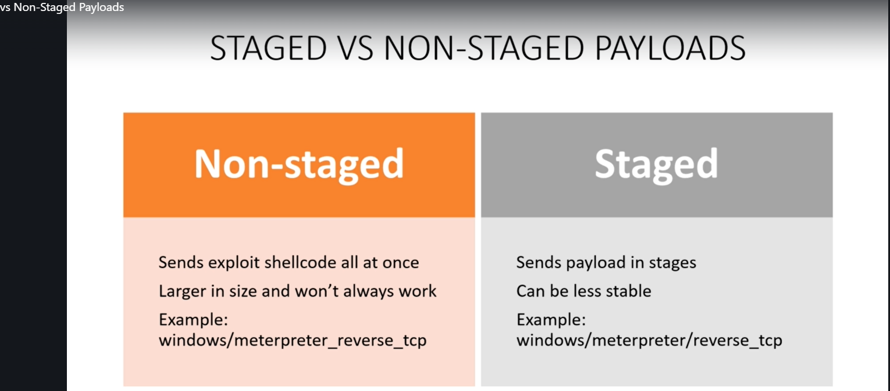

---------OUT OF LESSON---------
What is a malicious payload?
In the context of a cyber-attack, a payload is the component of the attack which causes harm to the victim. Much like the Greek soldiers hiding inside the wooden horse in the tale of the Trojan Horse, a malicious payload can sit harmlessly for some time until triggered.
Attack vectors such as viruses, wurms, and malware can all contain one or more malicious payloads. Malicious payloads can also be found in email attachments, in fact Symantec has reported that one in every 359 emails in existence contains a malicious payload, and this ratio is trending upward. (https://www.cloudflare.com/learning/security/glossary/malicious-payload/ )
--------------OUT OF LESSON----------------
payloads are what we use to send to a victim and attempt to get a shell on the machine.
There are two main types of payloads that we need to pay attention to.

all the differrence is a forward slash when we look at the windows/ bla bla line. so if you have a non-staged payload that doesn't work maybe try a staged payload. Or if these don't work maybe you can try bind shell instead of reverse shell with tcp connection where is in this slide.
And remember if yout payload fails but you think it's the right exploit maybe change your payload.